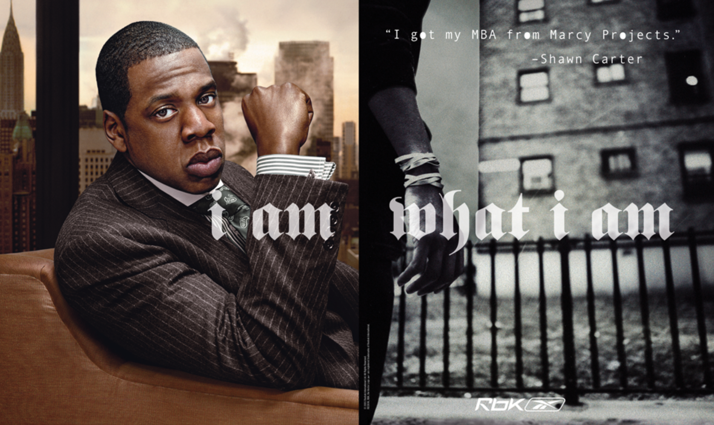
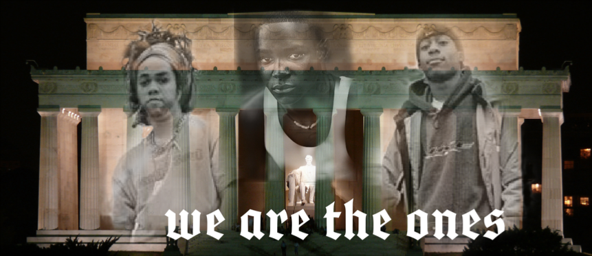
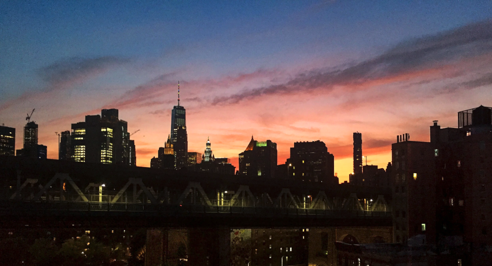
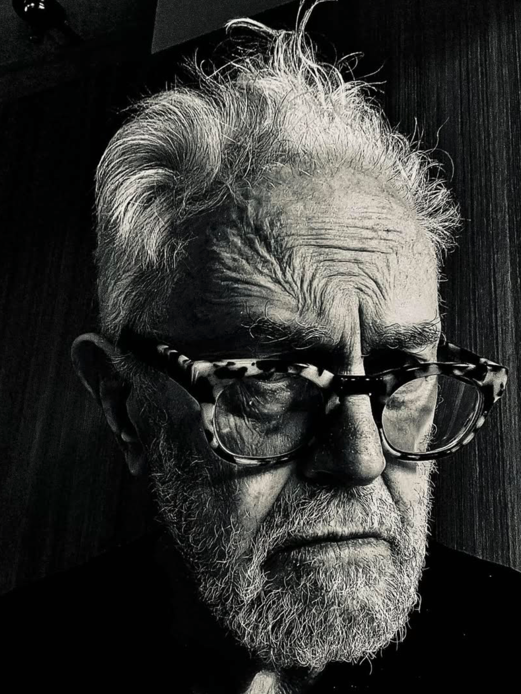

The title came from the landing page of his old portfolio site, the one before the photography. When it came to me, I thought of Lyn Hejinian, who titled a book of poems Writing Is an Aid to Memory. That's what this is.
Warren Eakins was ageless. The way the genuinely curious tend to be, because a real point of view doesn't soften the way a pose does.
I first understood what I was dealing with in a glass conference room on the ninth floor of Starrett-Lehigh, a building on West 26th Street that had been a freight terminal before it became one of the more interesting places to work in New York. McGarryBowen occupied most of the floor as I remember it. Eventually, all of it. There was a replica of the Statue of Liberty outside the conference room doors. Where the Queens of the Stone Age and Philip Glass once played for us, though not together. We were presenting ideas to the Disney clients over a conference call. My team and Warren's team, separately, to the same client.
I watched Warren present and thought: we're toast.
Not because I knew his reputation. Because he didn't present like a man with one. No pitch energy, no performance — just a guy talking about a couple of things he thought were cool. He wasn't selling. He was sharing. The room leaned in to hear him. My team may have won that pitch; I honestly don't remember. What I walked out with was something else: the understanding that there was a version of this work that could be done with dignity. You didn't have to sell anything. You could just show up and be certain.
I was thirty. I was on the brand identity and voice team, though I knew I was a writer — the agency didn't know that yet. Gordon Bowen ran the creative department. Warren was something else: the de facto master craftsman, the misfit at the center of the room, the person whose office you wanted to drift into and see what he had going.
After multiple waves of layoffs during the financial crash of 2008 got to me in 2009, I sent Warren a congratulatory note on LinkedIn. Had seen something about being promoted to ECD. He replied that it was great to hear from me, and that he was curious what promotion I meant, since he'd held that title since 2003.
A few years later in 2012, I stumbled upon his portfolio site while looking for inspo for my own. The landing page was a dense dark collage of faces and art and imagery — layered, compressed, alive — and centered in the middle of all of it: WE. I sent him an email with the subject line WOW!
"Too bad you're not named Warren Obadiah Winchester. Then the initials on your site could read WOW, which happens to be exactly what I shouted when I first hit the landing page. Lucky for you, WE happens to be a very solid monogram too — and I know Muhammad Ali would agree. The shortest poem in the English language is frequently said to be Ali's: 'Me. We.'"
"Omar Dude — what are you up to these days? Let me know, I'd be interested."
That question opened something. I told him I was out on my own. Had started an agency called Professor with Kenny and Agustin, two of the world-class designers from the McGarry team. After we split, Jason Borzouyeh, JB, was working at Dentsu in Malaysia and pulled me in on a Honda Hybrids pitch. We won. Then a Lumix pitch came along — I told them if we won, they'd fly me over for the production. We won. Three months in Malaysia, Indonesia and Thailand. Shoots in Kuala Lumpur and Tokyo. Once JB and I were back in the city, I emailed Warren to ask where I should be working. He pointed me toward specific agencies, named specific people, and then landed on the thing I actually needed:
"Remember Omar, don't limit yourself, you can't catch fish if you don't have a few lines in the water."
He asked me to say hello to JB.
He was Executive Creative Director of one of the largest agencies in New York, a decade into that title, replying to my email like a peer, asking after the people in my orbit, the same way he always had. I was surprised he replied. I was surprised he was so generous. I shouldn't have been. That's who he was.
Later I would learn he'd come to advertising in his thirties. I was thirty when I first watched him present. The parallel landed late, the way the useful ones do.
In 2016, a Bud Light spot I'd written for Vayner ran near the Super Bowl. Warren liked it on Facebook. Said I was one of the only ones still posting new work.
By 2017 he was living a few blocks from me in lower Manhattan — 88 Greenwich, near the water. He came over, we shot pool, drank Hudson bourbon. He thanked me the next morning for "a great evening Friday." He had a hangover. We were friends.
I corresponded with him more than I did with my own father.
At Blacktail, a bar on Battery Place, we sat across from each other. Somewhere that evening we got onto the subject of a campaign for the Obama Foundation's My Brother's Keeper Alliance. We had a couple of days to figure something out, a donated ESPN media buy, and no concept. He suggested we call the team OW — Omar and Warren, first letters of our names, like two guys serving gut punches.
What follows are two of Warren's campaigns. And one from OW.
THE WALL
1995
Warren was in Brazil filming a Nike commercial when he thought of a different Nike commercial.
His eye was always running. On this job, on the next one, on the city outside the frame. He watched the walls, and somewhere in there he saw it: the game played billboard to billboard, city to city, the world's best players kicking the same ball from Paris to London to Milan to Berlin to New York to Rio. Nike was just beginning to figure out soccer. Warren had already figured out the commercial.
He brought it to Joe Pytka. Pytka had one of the great catalogs in commercial directing — Michael Jordan, Madonna, the whole run. Warren asked him how they'd pull it off.
Pytka said he had no idea. He said let's figure it out.
That was enough.
Warren mentioned the shoot to me over drinks years later. The details I have are mostly Pytka's. He wrote about it at length on his site.
The shoot took them across six cities. The roster was world-class — Romario and Bebeto, the centerpiece of Brazil's 1994 World Cup, plus Ian Wright, Cantona, and Jorge Campos. Filming proved complicated in the ways that anything worth making proves complicated — not in the ways you planned for. They went to Barcelona first. Jorge Campos was supposed to be there. No show. London: Ian Wright, Cantona, Campos again. Wright did a perfect bicycle kick on the first try; his agent rushed the set screaming about dangerous maneuvers. The kick was done. Cantona was difficult but they got what they needed. Campos: no show.
Mexico City. Campos finally agreed to meet them at his team's training facility. Pytka's crew waited on one side of the field. Campos and his entourage waited on the other, staring across the pitch. Eventually a representative came over. Through an interpreter: Campos wanted to know who the director had worked with. Pytka started with Michael Jordan. When he got to Michael Jackson, they had a deal. The one hitch was that Campos was hurting. Pytka turned the camera sideways — to make it look like he's jumping laterally. Done.
Back in the States, the real problem surfaced. The concept was pre-digital: the ball passed from city to city, player to player, kicked and headed through billboard after billboard. With each strike, the concrete of the wall explodes outward — like the athlete is trying to break through the building with the force of a wrecking ball. No post house could make it convincing. Every test looked like what it was — photography placed on pre-filmed billboards. Pytka went through every reel, every company, every artist. Nothing worked.
Pytka's editor, Adam Liebowitz, went outside the VFX world. He came back with Kristin Johnson, who'd been cutting titles and promos at a television station in San Francisco. She wasn't a VFX artist. What she had was an eye and a willingness to work on a Paintbox — a system so archaic the work had to be done frame by frame.
It took months. Adam ran the bay. Warren kept his seat.
That image — Warren Eakins, sitting in an edit bay watching a television station compositor work a Paintbox one frame at a time — is the whole story. He didn't hand off the vision and wait for results. He sat there. He made sure the thing he'd seen in Brazil was still in the room when it was done.
He wrote about it on his site years later, plain as anything:
"This one TV spot instantly made Nike a global soccer brand."
The spot swept the shows — Gold Lion at Cannes, D&AD Silver Pencil, Best of Show at the One Show, Film Epica d'Or, Communication Arts Advertising Annual. The International Press named it their favorite of the year. It should have won the Grand Prix. No Grand Prix was given that year. The jury president — Frank Lowe — had feelings about a public service announcement that wasn't eligible. Pytka wrote about it years later with the precision he brings to everything: a Shakespearean study in hubris.
The Museum of Modern Art added it to their Permanent Film & Video Collection.
Nike has the trophy. The man moves on.
I AM WHAT I AM
2005
By 2005, Nike owned and had democratized performance. "Just Do It" had been telling you what to do for nearly twenty years. An open contract: anyone can earn the shoe, if they perform.
Reebok was finding its way as a challenger brand. Still is.
Warren came from the agency that wrote that contract. He knew the playbook. He threw it out.
At McGarryBowen, working with copywriter Randy Van Kleeck, he went looking for a different argument. What they found was this: Reebok's roster wasn't clean. Jay-Z had dealt crack cocaine as a teenager. 50 Cent had been shot nine times. Allen Iverson had spent half his career defying the NBA's dress code. These weren't liabilities. They were the brief.
Years later, pitching new clients, Warren sent a follow-up email with a print ad attached. He wrote:
"In developing the campaign we realized that Reebok's assets were unique — they were flawed — but had achieved success by overcoming difficult obstacles early in life. This ad refers to the phenomenal success of Jay Z as a business man despite having dealt crack cocaine when he was a teenager. The photo on the right is a re-creation of how he used rubber bands on his wrist to keep track of sales."
No euphemism. No spin. Just: here's who this man is, here's where he came from, here's the image. The rubber bands on Jay-Z's wrist, right side of the frame. Not a metaphor. A fact.
The Hughes Brothers — who brought the same unblinking eye to Menace II Society and Dead Presidents — directed documentary-style films for the campaign. One revealed what Warren called "a surprising side of Fifty Cent." The other followed Stevie Williams, the first African American to gain fame as a skateboarder — who honed his skills on the rugged concrete of his North Philadelphia neighborhood and earned his fame at Love Park downtown. Nobody was cleaned up. Nobody was made safe.
The 50 Cent spot got pulled in the UK. They said it glamorized gun culture. The campaign kept running everywhere else.
It put Reebok in the athletic shoe conversation for the first time in years.
I started at McGarryBowen in 2006, eleven months after the campaign launched. I had just missed the making but stepped into the longtail of the legend. Warren was still there. I was on the design team, a bunch of punks looking to do great work. He was our biggest fan. I didn't fully understand yet what I was standing next to.
A few years later, while I was still at McGarry, Droga5 dropped Decoded — an experiential campaign for Microsoft Bing built entirely around Jay-Z's memoir, with pages hidden in locations from his actual life. The Marcy Projects. A hotel pool in Miami. A boxing ring in Detroit. Whether or not Droga5 had Warren's work in mind, the DNA was there. Warren and Randy had seen something in 2005 that the industry spent the next decade trying to learn: that authenticity isn't a tone of voice. It's a set of facts you're willing to show.
WE ARE THE ONES
2017
He'd done Nike. He'd done Reebok. He'd done Adidas for Leagas Delaney in London. The only creative I've ever known to hold all three.
I tried to get him on UnderArmour. We got Obama instead.
Matter Unlimited had been working on a campaign called Brave Together for over a year when the client killed it. They had a week before a donated ESPN media buy went dark. They called me in.
I brought Warren in.
I sent him two lines: "This thing for Matter Unlimited is actually pretty cool. They need help with a campaign to rally American young men and it will kick off with a spot on ESPN. Interested?"
Warren replied:
"Young men" brings to mind the Village People — "Young man, there's no need to feel down. I said, young man, pick yourself off the ground..." Pretty inspiring, right? Haha.
I wrote back: "As the saying goes...it takes a village people to raise a young man."
Then he got serious. And then he almost left.
When we met in person, I laid out the full picture: a donated ESPN media buy, no real budget, and I was doing it pro-bono. Two days in, he sent an email with the subject line "Something weird." He no longer had the stomach for it, he wrote. The resources were too thin, the timeline impossible. He was used to armies of designers and the infrastructure of a large agency behind him. Here, we had Google Slides, one staff designer, and a deadline that felt like a firing squad. He'd be glad to be a set of eyes, he said, but couldn't get into the trenches.
Then, in that same email, he sketched a spot anyway.
He couldn't help it. He described projections on buildings, people engaging with a phrase, the feeling of a movement building.
"In a way like 'Black lives matter' but I wouldn't mention that."
He endorsed two lines I'd been working with: We Are The Ones and Conquer We Must. He suggested ending on the latter as a super. He was leaving, but he left a blueprint.
I wrote back and talked him down. The task wasn't as daunting as it seemed. I told him I just needed him to show up.
He stayed.
That afternoon I sent him a full copy deck — the campaign, the elements, and something new I'd been circling: The Keeper's Code. A playbook for the sport of brotherhood. A code for forming friendships and peer-to-peer alliances, written for young men who only had each other as role models. Warren wrote back at 3:32 PM:
"Really well done Omar, it makes a lot of sense. I love the creating a playbook, this was an element that was sorely missing. I favor the sports side of things, THE KEEPER'S CODE, rather than the cookbook, fits young men better, they can identify with it and it lets them know what is expected of them and others. The trading cards are really great. Perhaps new sets of 10 are released periodically. Good stuff."
I went off to write. By 9:34 that night I sent him THE SPEECH.
Open on a crowd of young men gathering at the footsteps of the Lincoln Memorial at night. There's an empty podium in place under a spotlight. There is silence and restlessness builds in the crowd. Until one of them just can't wait any longer and steps up to the microphone.
Warren read it the next morning. July 30, 11:38 AM:
"Visually, I absolutely love the Lincoln Memorial setting at night with laser-projected images. It will be phenomenally powerful combining the vastly different worlds of American Heritage, politics (the D.C. setting) and that of urban culture as seen through the lens of Dave Meyers. Fucking cool man."
He was already directing it in his head.
By then I'd been deep in Obama's speeches. The agency had come in considering We Are The One — singular. One read of the source material told me it needed the plural. We are the ones we've been waiting for. That was Obama's line, and it belonged to the young men the campaign was built to serve. Warren read the manifesto that afternoon and wrote: "The manifesto works really well. I could hear Obama's voice as I read it."
The next morning, July 31, Warren sent a first mockup at 11:12 AM — the image without the line. Four minutes later: "A thought: When we shoot this we should make it an event, have lots of the right people there, live music, the media, etc., some of it we will incorporate into the spots." At 11:56 AM, the second version arrived — with the line typeset.
Norah Tahiri, Matter Unlimited's designer, had been building in parallel. Her version projected five young people of color onto the columns of the Lincoln Memorial, drawn from the client's image library — a stronger, more representative selection than Warren's personal library had offered. Her typography was the brand's own typeface: clean, all-caps, on-brand. Warren's was a departure — lowercase, expressive, grounded low in the frame, the same visual sensibility he'd brought to I AM WHAT I AM. He saw Norah's version and agreed: her image selection and brand consistency gave the campaign what it needed. They didn't have time to marry the two approaches. They went with hers. Warren knew his eye was still in the room, even when his hand wasn't on the page.
The presentation cover read: _matter unlimited / _mbk alliance / _omar & warren. Two names. Equal billing.
When the account/strategy notes came back asking to avoid the word "playbook," Warren had one question: "Why? Doesn't she know ESPN is a sports brand and is bank rolling this project?"
We went on to hand off a full campaign. Warren and I said as much to each other when we wrapped. He wrote back: "Thanks Omar, it was my pleasure, you're great to work with. I think your smart and way ahead of the game by staying independent."
No budget, no time for Dave Meyers. Matter Unlimited brought in Shabazz Larkin to work on the storyboard. Jason J.M. Harper directed. They trusted the architecture and rebuilt on a smaller scale — one kid, a park, a microphone, a spoken-word speech that felt like it could have been filmed on a phone. The Lincoln Memorial became everywhere. Obama's words became one kid's voice.
The spot launched Christmas Day 2017 on ABC/ESPN during the NBA Christmas Day games, under the title My Brother's Keeper. Fifty million impressions. Zero paid media. Adweek, USA Today, The Washington Post, People, Esquire, and Campaign US all covered it the following morning. The Keeper's Code launched first — community events, social, digital — exactly as Warren and I had designed it. The conversations it sparked shaped the spot that followed.
Warren's key art — the image he made on the morning of the presentation — never officially ran. Three young people projected onto the columns of the Lincoln Memorial, asking for what was already theirs. In the summer of 2020, hundreds of thousands of people stood at those same columns and demanded the same thing, with the whole world watching.
Warren saw the architecture of that moment before the first brick was thrown.

Right after the MBK presentation, Warren told me about London. He was matter-of-fact about it the way he was about everything.
The London plan — becoming a partner at Leagas Delaney, helping the agency grow, building something for the future — had been an unmitigated disaster of the highest degree. He ended up back in New York. By the time we worked together on MBK, he was renting a room from someone in the Lower East Side. Then that person died. He mentioned he was looking for a place — wanted to stay downtown. He posted on NextDoor looking for a sublet. I didn't know where he landed until I read his site recently: "A room with a view." He said he'd been as happy as he'd been in years. Instead of money he had time and he didn't have to answer to anyone.
He didn't need a title. He'd never needed a title.
After we presented and they liked our thinking — and wanted us to build the campaign out — the agency said they might find five hundred dollars somewhere. It became a thousand. I sent Warren half. The memo read: thank you for teaming up with me to help Obama!! I noted a bunch of time put into the work as a tax write-off.
He'd already sent me a Times piece on Rubén Darío on Thanksgiving — the inescapable poet of Nicaragua. Warren had never heard of him. He wrote:
"Now I know why you are a poet. I must say I wasn't aware of Ruben Dario, wow, what a man."
That was Warren. Campaign done, pressure off, and he's sending you a poet.
Two months later, two days after my birthday, a Guardian piece arrived about a man in Southampton who'd turned his love of cycling and engineering into a career building custom steel-frame road bikes. "Thought you might enjoy this article in The Guardian online." No occasion mentioned. Just: here is a thing worth knowing about.
That was also Warren.
Life after that got complicated in ways I wasn't going to advertise. Family in Florida. Kayla in Arizona. Work in Miami and NYC. I kept dropping his name when I pitched agencies — he'd be a great partner on this. They weren't interested. I don't know what they were looking for. Their loss.
Back in the day, Warren opened Weiden's Amsterdam office. Then Fallon's LA office — with Arty Tan, Greg Hahn, Mike Smith, and Mike Folino — for David Lubars. And helped open McGarryBowen.
There's another version of this story where he and I open a shop together. I've thought about it. If he'd had the stomach for it.
On December 26, 2025, I sent him a note with the subject line: A pocket-full of Bernbach. He didn't reply.
Warren Eakins died in February 2026.
He'd taken his advertising work off the internet. All of it — the Nike spots, the Reebok campaign, Sign Language in MoMA's Design Study Collection, The Wall in their Film & Video Collection, group exhibitions at the Centre Pompidou, a Gold Lion at Cannes. Gone. What was left was photography. The Art Underfoot series: arrows and X marks and pedestrian icons painted on asphalt, shot from above, perfectly framed. The guy couldn't stop being an art director even when he was being a photographer. That's not a limitation. That's a gift. He'd adopted a line from photographer Stephen Shore as his frame:
"To see something ordinary, something you'd see every day, and recognize it as a photographic possibility. That's what I'm interested in."
Warren had been doing that his whole career. He just changed what he was pointing the camera at.
Row after row of self-portraits. His face blurred, grainy, shot in low light, almost disappearing into the frame. A man looking hard at himself. That's not vanity. That's an artist doing the work.
His portfolio bio said:
I lost interest, and turned my attention to photography full time.
No explanation. No justification. He just did it.
The Johnny Cash of Advertising cashed out.
On his contact page there was a drawing — dense, intricate pen work, a self-portrait in a sea of fish. The rest of the page was untouched template copy: Contact us. email@example.com. (555) 555-5555. 123 Demo Street, New York, NY 12345. Facebook. Instagram. Twitter. Click any of those links and they go nowhere — defaults. He had actual Facebook and Instagram accounts. He just never updated the page. The only way to reach Warren Eakins was to look at his work. I chuckled. Felt exactly right.
In 2015, the Exposure Award International Photography selected his work for The Body Collection exhibition at the Louvre. Of course it did. His Instagram was a mix of photography, selfies, and genuinely funny memes:
"Well you see, Norm, it's like this . . . A herd of buffalo can only move as fast as the slowest buffalo; and when the herd is hunted, it is the slowest and weakest ones at the back that are killed first. This natural selection is good for the herd as a whole, because the general speed and health of the whole group keeps improving by the regular killing of the weakest members. In much the same way, the human brain can only operate as fast as the slowest brain cells. Now, as we know, excessive intake of alcohol kills brain cells. But naturally, it attacks the slowest and weakest brain cells first. In this way, regular consumption of beer eliminates the weaker brain cells, making the brain a faster and more efficient machine. And that, Norm, is why you always feel smarter after a few."
He posted when his work was recognized — a Silver for OverDose Vodka in Graphis Packaging 10 in 2021; all ten of his entries juried into the Graphis Photography Annual 2022, a Silver medal and nine honorable mentions; a Graphis medal for the poster "My Lungs Hate Me — No. 1" in 2023.
He set the bar so high that every creative I worked with after him had to answer to it. Most of them didn't know they were being compared. Working with Warren gave me the confidence to go on and make spots for Google and Samsung. More than any ad school ever could. He's probably why I work solo these days.

Take care, Dude.